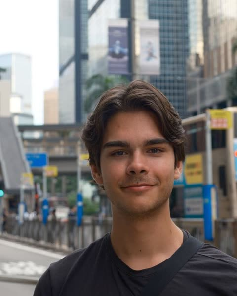

MSc student in Quantum Information Science at the University of Copenhagen. I work on error-correcting codes, I measure whether things actually work, and I spend the rest of my time on languages.

I study how to make noisy things agree. In practice that means decoding error-correcting codes fast enough for quantum key distribution, and building the tests that decide whether a system is as good as its author says.
I came to this from mathematics: a BSc at FCUL in Lisbon, an MSc in Copenhagen, and since 2025 a research collaboration with the HPCAS group at INESC-ID. What I enjoy is the moment a result stops being plausible and becomes checked.
Outside the campus I am learning Danish and Mandarin, which between them use more of my attention than anything else I do for its own sake.
LDPC codes over Galois fields designed for burst errors, with a decoder that solves a structured linear system instead of running belief propagation. The decoding is in the complexity class NC, so it maps onto GPUs: the same algorithm runs on Apple Metal and NVIDIA CUDA, and the GPU version is up to 136 times faster than the sequential C reference on a 4500 × 6000 system.
Most of my work is measurement. Inject errors with known ground truth, sweep the error rate, record failure statistics, runtime and throughput, and repeat everything on three execution backends so that a result belongs to the algorithm and not to one machine.
A browser game built with two colleagues in plain HTML, CSS and JavaScript, where I wrote the accounts, the login and edit-account flows, the local persistence and the history and leaderboard pages. It taught me that the interesting part of an interface is what it tells you when something fails.
Uniform LDPC codes over Galois fields for the reconciliation step of QKD, with a parallel decoder that trades belief propagation for exact linear algebra, and a Las Vegas extension for the high-noise regime.
The journal version adds the full construction of the codes, the syndrome analysis with proofs, the matrix generators and the complete sequential and GPU benchmarks over four fields. It also makes the short-block case: the evaluation runs on 2000-bit frames, where belief propagation normally needs long codewords.
The decoders, matrix generators and benchmark harnesses behind both papers, with build instructions for the CPU, Apple and NVIDIA backends.
A match-three browser game with real accounts: sign-up, login, edit-account, a local leaderboard and a history page with per-player statistics.
Portuguese native
English CEFR C1, TOEFL iBT 110/120 (February 2026)
Danish studying, so I can read the signage and the news
Mandarin Chinese around HSK 3 according to my private tutor
Two languages at the same time, one for the city I live in and one for a family of scripts I find beautiful. Danish is the newer and braver of the two; Mandarin is further along, though improving more slowly than I would like.
Travel and tea. I like travelling to places where the food and the alphabet are unfamiliar, and I plan trips around markets and meals rather than monuments. The related obsession is tea: green and oolong, brewed in a gaiwan, where I will happily spend an afternoon on the difference between two infusions of the same leaf, which is the cheapest way I know to spend three hours on a single variable.
Music was the longest habit: classical piano from childhood to the sixth degree of the Portuguese official course in 2023, and grade 5 of the Associated Board of the Royal Schools of Music in 2020. I have stopped playing for now; the recording below is from a recital.